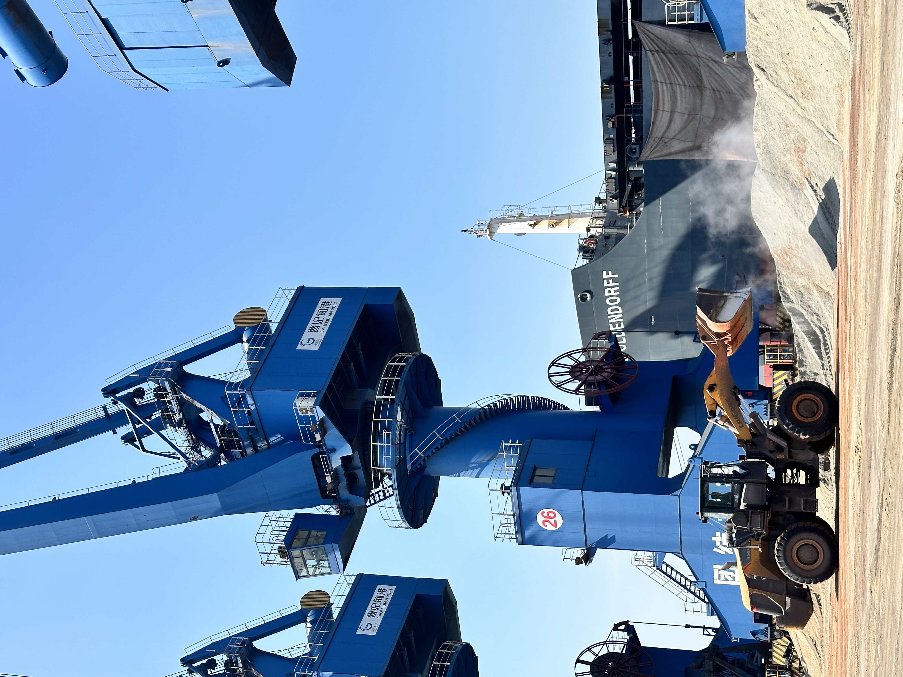

2026-09-26
Itori Clinker Export Plan Tests Corridor Execution
Dangote Cement's export-oriented Itori plant puts the complete clinker corridor—from production and road haulage to Apapa port and regional grinding markets—under one operating plan.
Itori 熟料出口计划检验全链路执行能力
Dangote Cement 的出口型 Itori 工厂，把生产、公路运输、Apapa 港装运与区域粉磨市场纳入同一条熟料出口链路。

Punch reported on 25 September 2026 that Dangote Cement plans to use its Itori plant in Ogun State as an export hub. The first phase is designed for six million tonnes of capacity, with production expected to be predominantly clinker for affiliated operations and neighbouring markets. The signal is not simply new capacity: it is a test of whether a complete clinker export corridor can operate reliably.
1. Export capacity needs a defined demand map
The reported plan links Itori output to grinding and expansion needs in Cameroon, Senegal, Benin and Togo. Named destinations matter because clinker is not valuable merely when produced; it must match receiving-plant demand, quality requirements, storage availability and discharge schedules. Buyers and sellers should align annual volume expectations with shipment-size reality rather than treat nameplate capacity as immediately tradable supply.
2. Inland haulage and port handling form one cost system
Dangote said clinker would move by road from Itori to Apapa, where export infrastructure already exists. That approach can reduce new capital expenditure, but it transfers execution pressure to truck availability, road reliability, stockyard control and port sequencing. A competitive FOB number can disappear quickly if inland queues, moisture exposure or vessel delays are not allocated and monitored.
3. Repeatable shipments matter more than a single cargo
Regional clinker trade depends on consistent specifications, cargo accumulation, vessel fit and document discipline. The same principle applies to GBFS and other bulk cementitious materials: qualify the source, define the loading window, confirm port capability and keep a fallback plan for transport disruption.
Takeaway: Itori strengthens the West African clinker-supply map, but its commercial value will be proven by corridor performance—reliable inland movement, port readiness and repeatable delivery to operating grinding plants. Source: Punch, 25 September 2026.
《Punch》于 2026 年 9 月 25 日报道，Dangote Cement 计划把尼日利亚奥贡州 Itori 工厂作为出口枢纽。第一阶段设计产能为 600 万吨，预计以熟料生产为主，服务集团关联企业及邻近市场。这个信号不只是新增产能，更是在检验一条完整的熟料出口走廊能否稳定运行。
1. 出口产能需要明确的需求地图
报道将 Itori 产出与喀麦隆、塞内加尔、贝宁和多哥的粉磨及扩建需求连接起来。明确目的地很重要，因为熟料并非生产出来就自动形成贸易价值；它还必须匹配接收工厂的需求、质量要求、仓储能力与卸货计划。买卖双方应把年度需求预期与实际船货规模对齐，不能把铭牌产能直接视为可立即交易的供应量。
2. 内陆运输与港口装卸是同一个成本系统
Dangote 表示，熟料将通过公路从 Itori 运往已有出口设施的 Apapa 港。这可减少新增资本支出，但也把执行压力转移到车辆供应、道路可靠性、堆场管理和港口排期。若内陆排队、受潮风险或船期延误没有明确分工和监控，有竞争力的 FOB 价格会迅速被额外成本侵蚀。
3. 可重复发运比单票货更重要
区域熟料贸易依赖稳定指标、集港能力、船型匹配和单证纪律。相同原则也适用于粒化高炉矿渣（GBFS）等散装胶凝材料：认证实际货源，明确装期，确认港口能力，并为运输中断准备备用方案。
结论：Itori 将增强西非熟料供应版图，但其商业价值最终取决于全链路表现——稳定的内陆运输、港口准备度，以及向在运营粉磨站持续交付的能力。来源：《Punch》，2026 年 9 月 25 日。